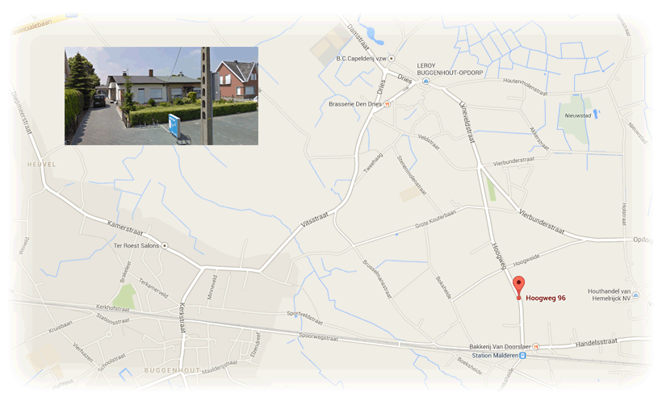

Openingsuren
Van April tot en met Augustus
Alle dagen open van 13u30 tot 19u30
Maandag en Dinsdag gesloten
Van September tot en met Maart
Alle dagen open van 13u30 tot 18u00
Maandag en Zondag gesloten
Geert's contactgegevens
Geert's locatie
